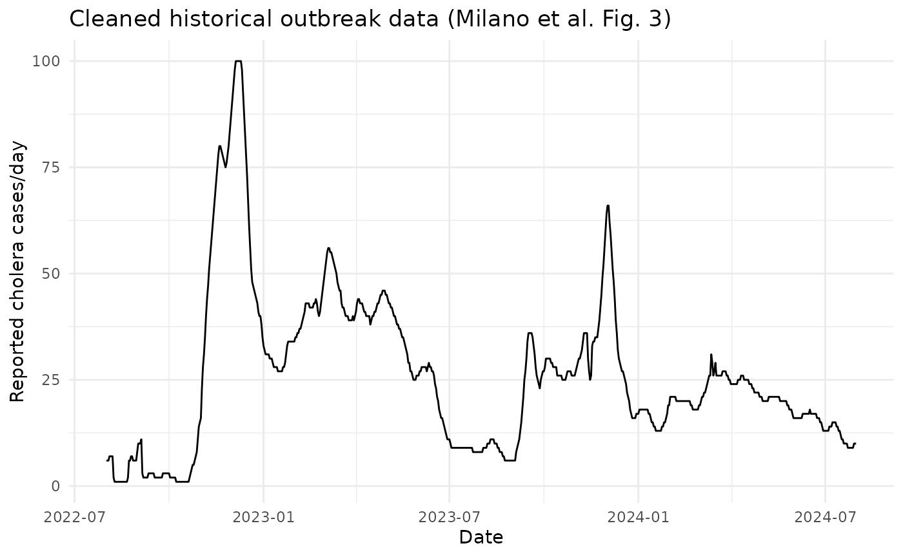
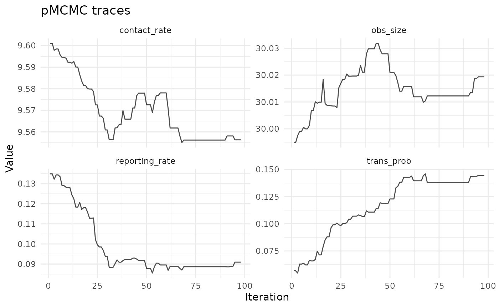
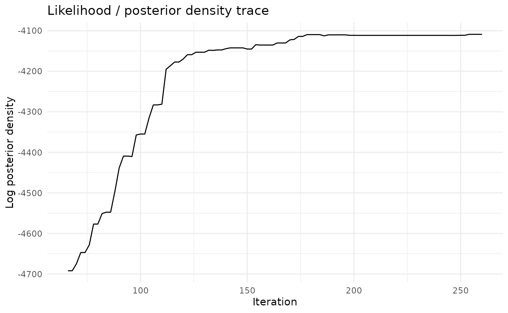
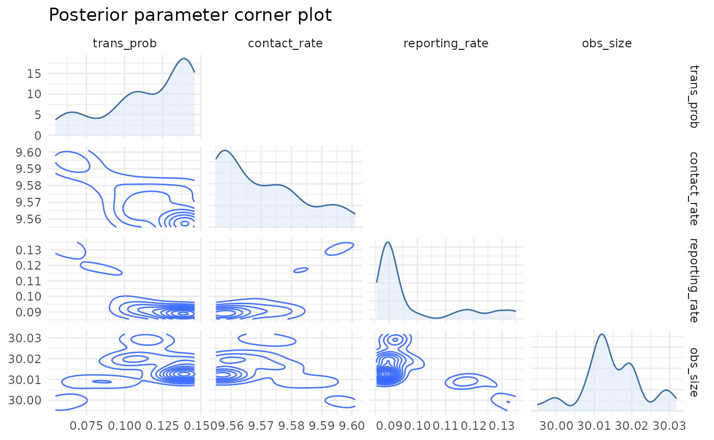
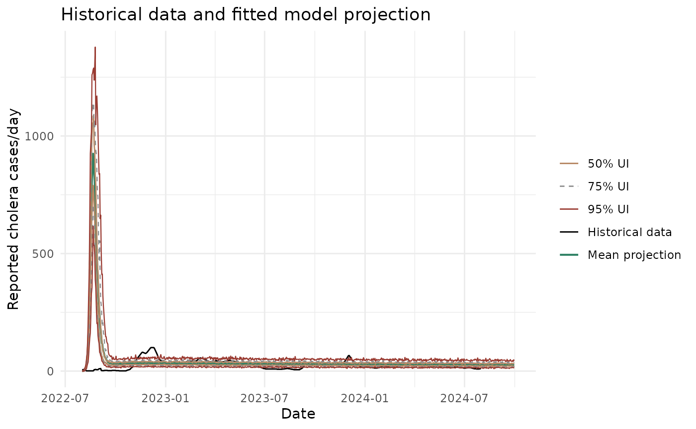

Why This Workflow?
All package vignettes in this release use the same shared synthetic
case study built by chlaa_case_study_setup(), so readers
can compare fitting, intervention scenarios, and economics on a common
outbreak context.
The setup is paper-aligned in broad terms (population scale, trigger/declaration cadence, and vaccine dose quantities) and designed to show a realistic multi-wave trajectory.
library(chlaa)
library(ggplot2)
case_study <- chlaa_case_study_setup(seed = 42)
example_data <- case_study$data
head(example_data)
#> date time cases mu_cases inc_symptoms_truth inc_infections_truth
#> 1 2022-07-01 0 0 0.010 0.00 0.00
#> 2 2022-07-02 1 0 0.010 0.00 1.20
#> 3 2022-07-03 2 0 0.010 0.00 10.00
#> 4 2022-07-04 3 0 0.042 0.35 21.65
#> 5 2022-07-05 4 0 0.198 1.65 32.45
#> 6 2022-07-06 5 0 0.396 3.30 45.901) Visualise The Shared Outbreak Data
ggplot(example_data, aes(x = date, y = cases)) +
geom_line(linewidth = 0.5, colour = "black") +
labs(
x = "Date",
y = "Reported cholera cases/day",
title = "Shared synthetic outbreak data used across all vignettes"
) +
theme_minimal()
2) Prepare Data And Starting Parameters
To keep vignette runtime practical on CI, we fit an early-to-mid outbreak window and reserve later dynamics for scenario/economic workflows.
fit_data_raw <- subset(example_data, date <= as.Date("2023-06-30"))
fit_data <- chlaa_prepare_data(fit_data_raw, time_col = "time", cases_col = "cases")
pars_start <- case_study$pars
pars_start$contact_rate <- pars_start$contact_rate * 0.92
pars_start$trans_prob <- pars_start$trans_prob * 1.08
pars_start$reporting_rate <- pars_start$reporting_rate * 0.923) Fit With pMCMC
fit <- chlaa_fit_pmcmc(
data = fit_data,
pars = pars_start,
n_particles = 60,
n_steps = 260,
seed = 42,
proposal_var = 1e-5
)
#> ⡀⠀ Sampling ■ | 0% ETA: 17s
#> ⠄⠀ Sampling ■■■■■■ | 17% ETA: 5s
#> ⢂⠀ Sampling ■■■■■■■■■■■■■■■■■■■■■ | 67% ETA: 2s
#> ✔ Sampled 260 steps across 1 chain in 6.1s
#>
fit
#> <chlaa_fit>
#> Posterior draws: 260 iterations; 9 parameters
#> Data: 365 observations; time range [0, 364]4) Diagnostics
fit_report <- chlaa_fit_report(fit, burnin = 0.25, thin = 2)
fit_report$acceptance_rate
#> [1] 0.07216495
chlaa_plot_trace(
fit,
parameters = c("trans_prob", "contact_rate", "reporting_rate", "obs_size"),
burnin = 0.25,
thin = 2
)
chlaa_plot_likelihood_trace(fit, burnin = 0.25, thin = 2)
chlaa_plot_parameter_pairs(
fit,
parameters = c("trans_prob", "contact_rate", "reporting_rate", "obs_size"),
burnin = 0.25,
thin = 2,
max_points = 1500
)
chlaa_plot_parameter_vs_likelihood(
fit,
parameters = c("trans_prob", "contact_rate", "reporting_rate"),
burnin = 0.25,
thin = 2,
max_points = 1500
)
#> `geom_smooth()` using method = 'loess' and formula = 'y ~ x'
5) Posterior Predictive Projection
forecast_time <- case_study$time
fc <- chlaa_forecast_from_fit(
fit = fit,
pars = pars_start,
time = forecast_time,
vars = "inc_symptoms",
include_cases = TRUE,
quantiles = c(0.025, 0.125, 0.25, 0.5, 0.75, 0.875, 0.975),
n_draws = 80,
burnin = 0.25,
thin = 2,
seed = 42,
dt = 1,
n_particles = 1
)
f_cases <- fc[fc$variable == "cases", ]
f_cases$date <- case_study$dates$start_date + f_cases$time
obs <- example_data
# Overlay style mirrors the narrative used in the paper figures:
# historical line, mean projection, and nested uncertainty bands.
ggplot() +
geom_line(data = obs, aes(x = date, y = cases, colour = "Historical data"), linewidth = 0.5) +
geom_line(data = f_cases, aes(x = date, y = mean, colour = "Mean projection"), linewidth = 0.7) +
geom_line(data = f_cases, aes(x = date, y = q0p25, colour = "50% UI"), linewidth = 0.5) +
geom_line(data = f_cases, aes(x = date, y = q0p75, colour = "50% UI"), linewidth = 0.5) +
geom_line(data = f_cases, aes(x = date, y = q0p125, colour = "75% UI"), linewidth = 0.4, linetype = 2) +
geom_line(data = f_cases, aes(x = date, y = q0p875, colour = "75% UI"), linewidth = 0.4, linetype = 2) +
geom_line(data = f_cases, aes(x = date, y = q0p025, colour = "95% UI"), linewidth = 0.4) +
geom_line(data = f_cases, aes(x = date, y = q0p975, colour = "95% UI"), linewidth = 0.4) +
scale_colour_manual(values = c(
"Historical data" = "black",
"Mean projection" = "#2c7f62",
"50% UI" = "#b88a66",
"75% UI" = "#8c8c8c",
"95% UI" = "#9a3b32"
)) +
labs(
x = "Date",
y = "Reported cholera cases/day",
colour = NULL,
title = "Historical data and fitted model projection"
) +
theme_minimal()